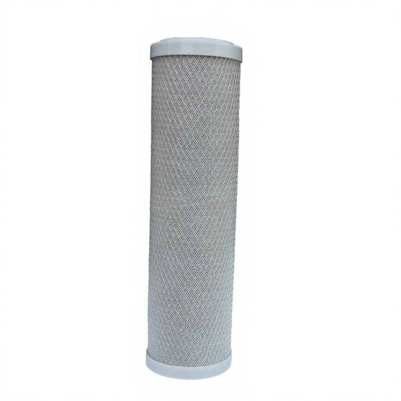

فلتر مدمج T33 صغير للمعادن
يحسن الطعم والرائحة عن طريق إزالة الكلور وإضافة المعادن المفيدة للمياه. توريد مصنع بالجملة، قابل للتخصيص لـ OEM/ODM. معتمد من NSF/...
عرض التفاصيل →
يزيد من درجة حموضة المياه (pH) ويضيف المعادن الأساسية. توريد مصنع بالجملة، قابل للتخصيص لـ OEM/ODM. معتمد من NSF/ISO لمعالجة المياه الصناعية والتجارية. يتم تصنيعها في منشأتنا المعتمدة من ISO 9001:2015 بمساحة تزيد عن 20,000 متر مربع في مدينة يوان هوا، هاينينغ، مقاطعة تشجيانغ، الصين. تم اختبار المنتج بشكل مستقل وفقاً لمعايير NSF/ANSI 42 و 53 من قبل SGS، مع علامة CE للامتثال للاستيراد الأوروبي. تتوفر إمكانية التخصيص للعلامات التجارية الخاصة (OEM/ODM): طباعة العلامة التجارية، وقوالب الأغطية الطرفية المخصصة، وتنسيق الألوان والتغليف. الحد الأدنى للطلب (MOQ) يبدأ من 1,000 قطعة؛ البيع بالجملة FOB شنغهاي/نينغبو. نقوم حالياً بالتصدير إلى أكثر من 50 دولة بما في ذلك الولايات المتحدة وألمانيا وروسيا والمملكة العربية السعودية وماليزيا وإندونيسيا والبرازيل، مع شهادة حلال كاملة (JAKIM) للأسواق الإسلامية.
| الهيكل | هيكل محكم الغلق من قطعة واحدة من PE / PP المخصص للغذاء |
|---|---|
| التوصيل | توصيل سريع 1/4 بوصة أو 3/8 بوصة (دفع للتركيب) |
| وسط الترشيح | كرات ذات إمكانات سلبية / أحجار قلوية / كربون قشرة جوز الهند النشط |
| أقصى ضغط عمل | 0.6 ميجا باسكال (87 رطل لكل بوصة مربعة) |
| عمر الخدمة | 12 شهراً / 6,000 لتر (أيهما أولاً) |
| درجة حرارة العمل | 5°م – 38°م |
| الشهادات | NSF/ANSI 42, FDA, RoHS, SGS |
| OEM/ODM | متوفر · طباعة شعار مخصص · MOQ 2,000 قطعة |
| الوظيفة | المعادن القلوية |
| الموصل | توصيل سريع |
| الفوائد | تحسين درجة الحموضة والطعم |
← Back to All Products المنتجات
يحسن الطعم والرائحة عن طريق إزالة الكلور وإضافة المعادن المفيدة للمياه. توريد مصنع بالجملة، قابل للتخصيص لـ OEM/ODM. معتمد من NSF/...
عرض التفاصيل →
فلتر مدمج يحتوي على أحجار المايفان لمعادلة المياه وتحسين طعمها. توريد مصنع بالجملة، OEM/ODM. معتمد من NSF/ISO. صنع في هاينينغ، تشج...
عرض التفاصيل →
يعيد المعادن إلى المياه. توريد مصنع بالجملة، OEM/ODM. معتمد من NSF/ISO. صنع في هاينينغ، الصين....
عرض التفاصيل →فلتر مدمج مريح مع تركيبات توصيل سريع مدمجة. مثالي لأنظمة تحت الحوض. توريد مصنع بالجملة، OEM/ODM. معتمد من NSF/ISO....
عرض التفاصيل →